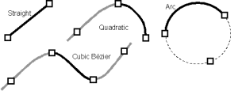

Research: Vitrigraph
Please note: The Vitrigraph program is not available to download because it is not in a state suitable for release to the public. If you would like to take the Java source code and improve the program then email me.
Vitrigraph was created as the third-year project for the B.A. Hons Computer Science from the University of Cambridge. The aim of the project was to create an application program that can be used to design stained glass windows. The emphasis was on features that assist the physical realisation and financial evaluation of the designs. An extension was implemented to create ray-traced pictures. These allow a design to be evaluated aesthetically, prior to construction. The program has achieved the aims of the project. It provides a simple interface for the non-technical user, to design a detailed window with intuitive manipulation of graphical objects. The novel underlying data structure provides support for algorithms that detect design faults, calculate the production cost based on raw materials and complexity, and produce pleasing and realistic ray-traced images.
A design for a stained glass window is stored with a modified version of
the winged-edge data structure, that has not only straight edges but three
other types: quadratic and cubic Beziers, and arcs.

A screenshot of Vitrigraph being used to create a simple window design.
Edges are created, vertices are dragged around, and
the facets are filled with various types of glass.
The ray-tracer output for a complex design. This style of output,
called 'sunbeam', provides
a compelling depiction of the design to present to a customer.
Listed below are the achievement criteria for the Vitrigraph application, with explanations of how they were met
| The user must be able to create a stained glass pattern using simple constructs that are combined graphically. | Manipulation of patterns is simple and straightforward. Optimisations have ensured the interactive user interface remains responsive even for large, complex patterns. |
|---|---|
| The graphical representation of the pattern should relate directly to the intended physical design, and incorporate information such as the type of each piece of lead and glass. | This is the case. The Java routines used to create the printouts are also used to draw the pattern on the screen, so what you see is what you get. |
| It must be possible to load and save designs from and to files. | This facility has been included and tested. |
| It must be possible to produce printouts of the whole pattern or parts of it, from which the stained glass window can be constructed. | This facility has been included and tested. It provides an accurate method for cutting the glass facets. Individual facets can be printed on a small-format printer, or the whole life-sized pattern can be printed on a large-format printer and used as a template for assembly. |
| Financial evaluation routines should compute the cost of producing the window. The routines should give an accurate costing for patterns of varying size and complexity. | The evaluation routines give quite accurate cost analyses for the test patterns. These can be used as a guide to pricing, but the price of a stained glass window should ultimately be set by an expert: there are many factors that affect the difficulty of constructing a particular pattern: some types of glass may be harder to cut than others, certain window shapes will be more difficult to achieve, and the craftsman will be more efficient at constructing a pattern in a style with which he is familiar. |
| The program must be able to present the pattern in a form that makes it easy to visualise the finished product. Aesthetic evaluation must be possible. | The ray-tracer translation system allows patterns to be assessed aesthetically by people with no experience in stained glass or computing. |
For more information on Vitrigraph see my list of publications.